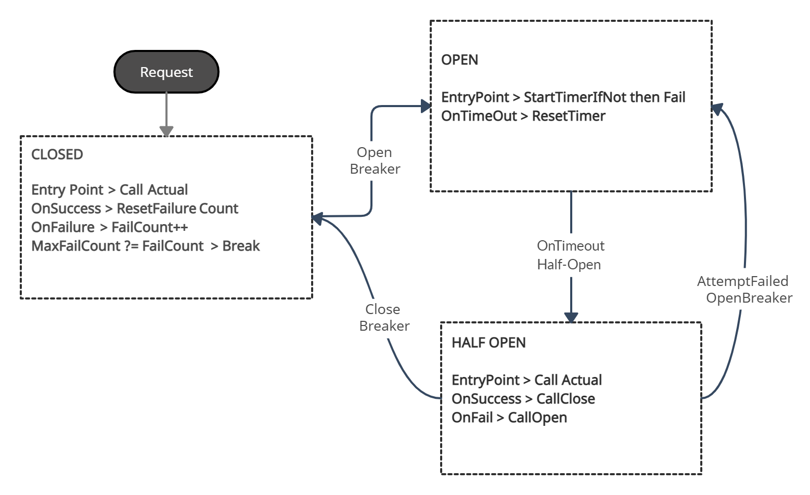
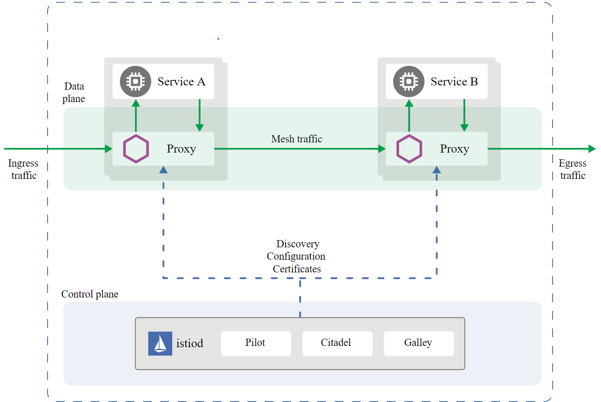

What about resiliency?
In the reactive manifesto resilient systems described as:
Resilient: The system stays responsive in the face of failure. This applies not only to highly-available, mission-critical systems — any system that is not resilient will be unresponsive after a failure. Link
Although there is a kind of philosophical manifesto available written/signed by builders, I believe, the expectation from the writers of this manifesto was always to build resilient things under chaos, uncertainty and continuous change. Some examples may be;
- New business area/expansion
- Cloud provider update/decommission/change certain behavior or API
- Government policy change
- Increase Security
- Big migrations / forced migrations
- Covid-19
- Innovation
Communication / Messaging
Maybe it’s boring but when it comes to describing resiliency we need to talk about the semantics of a message delivery mechanism. There are three basic categories:
-
at-most-once: messages may be delivered or messages may be lost.
Cheapest—highest performance, least implementation overhead—because it can be done in a fire-and-forget fashion without keeping state at the sending end or in the transport mechanism.
-
at-least-once: messages will be delivered but messages may be duplicated.
Requires retries to counter transport losses, which means keeping state at the sending end and having an acknowledgement mechanism at the receiving end
-
exactly-once: the message can neither be lost nor duplicated, will be delivered as requested.
Most expensive—and has consequently worst performance —because in addition to the at-least-once, state to be kept at the receiving end to filter out duplicate deliveries.
In mission-critical environments like trading/banking /healthcare, etc. understanding delivery semantic is extremely important. Most of the time business teams request guaranteed delivery and order ( exactly-once). But guaranteed-delivery is most efficient if it also implemented in business level;
Stating that it is important on the business level that every message is received exactly-once like it is in order processing, means that every message constitutes a unique business transaction. Like with in-order processing, WSRM (or its competitors) guarantees exactly-once delivery by attaching unique numbers to messages, acknowledging receipt, and possibly resending or duplicate removal.
If reliability is important on the business level, do it on the business level. A Reliable Messaging layer can handle only generic logic, but that’s not what we want: we want business-specific logic for in-order and exactly-once processing. Article
Common Design Patterns and Principles
There are common design patterns/principles per business case needs to considered together with delivery semantics.
-
Retry: Enables an application or a service to handle transient failures while connecting a service or network resource, by transparently retrying a failed operation. (Hystrix,Resilience4j,Polly.Some History)
-
Circuit Breaker: This always seems me a complementary pattern to Retry. The scenario is Service signaling that it is becoming unhealthy and the circuit breaker then gives the service a chance to recover by throttling back the number of requests or rerouting them completely. Once the service gets recovered, the circuit breaker slowly ramps up requests to the service so as not to immediately overwhelm it and risk it becoming unhealthy again.
The Circuit Breaker pattern prevents an application from performing an operation that is likely to fail. (Release It!)
Circuit Breaker proxy is a state machine having 3 states (Open, Half-Open, Closed)

-
Bulkhead Principle: In a ship “Bulkheads” prevents water to move from one side to another. The other term for Bulkhead is “Retaining Wall”. As a design principle, By partitioning our systems, we can keep a failure in one part of the system from destroying everything.
In most of the resources Bulkhead recommended particularly with shared services models. Failures in service-oriented or microservice architectures can propagate very quickly. A of “Chain Reaction” can trigger a serious set of destructive events. Then you’d better put in some Bulkheads. One thing to consider is this may lead to less efficient use of resources.
-
Fail Fast: The worst thing is slow failure responses and unnecessary usage of system resources. The principle says “Verify integrity early and fast”
- Avoid slow responses and fail fast.
- Reserve resources, verify integration points early.
- Validate inputs as early as possible
-
Cyber Security This article is not about cybersecurity resiliency, but systems need to be designed to be resilient under highly dynamic security threats. In covid-19 times one of the most hyped words was also resiliency and I believe will continue to be.
Specific Recommendations from Cloud Providers
- Microsoft recommended Patterns for application/service and network resiliency > https://docs.microsoft.com/en-us/azure/architecture/patterns/category/resiliency
- AWS Well-Architected Framework for mostly service and network resiliency > https://docs.aws.amazon.com/wellarchitected/latest/reliability-pillar/resiliency-and-the-components-of-reliability.html
- Google Cloud recommends certain tools for service and network resiliency > https://cloud.google.com/solutions/scalable-and-resilient-apps#resilience_designing_to_withstand_failures
Microservices Network Resiliency > Service Mesh
A service mesh is the logical layer between services that adds additional capabilities like traffic control, service discovery, load balancing, resilience, observability, security, and so on. A service mesh allows applications to offload these capabilities from application-level libraries and allow developers to focus on differentiating business logic. Service Mesh primarily focuses on service-service communication resiliency.
Unlike other systems for managing this communication, a service mesh is a dedicated infrastructure layer built right into an app. From Redhat
Service Mesh builds on top of “Layer 5”. There is also a great website (and company) dedicated to service meshes Layer5. I won’t dive into this in this post.
Service Mesh architecture contains “mostly” 2 layers called planes:
- Control Plane
- Data Plane

Application Focus Resiliency > Dapr
In dapr documentation dapr described as ;
Dapr is a portable, event-driven runtime that makes it easy for any developer to build resilient, stateless and stateful applications that run on the cloud and edge and embraces the diversity of languages and developer frameworks.

Additionally
- Adaptive Resiliency concept –> https://medium.com/@NetflixTechBlog/performance-under-load-3e6fa9a60581
- https://ballerina.io/ “directly address the Fallacies of Distributed Computing as part of their application logic. This facilitates resilient, secure, performant network applications to be within every programmer’s reach.”
- Saga Pattern
In my next post, I will share how to use dapr locally and with Azure AKS. Less talk, more code.